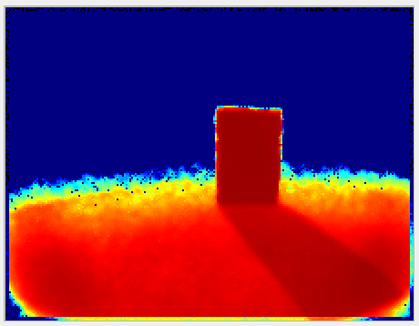
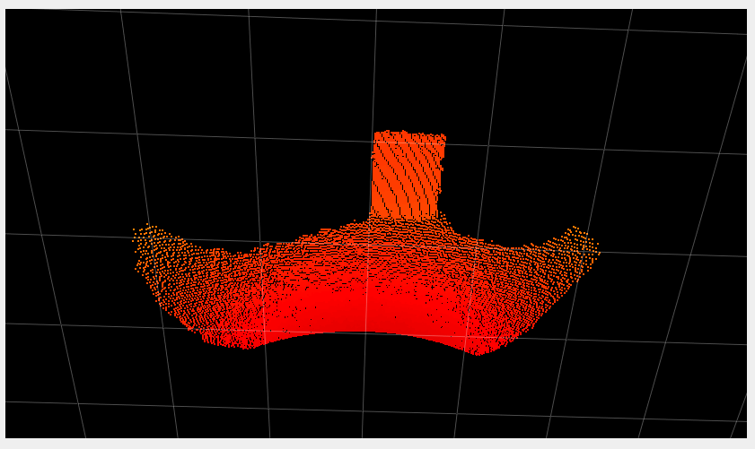
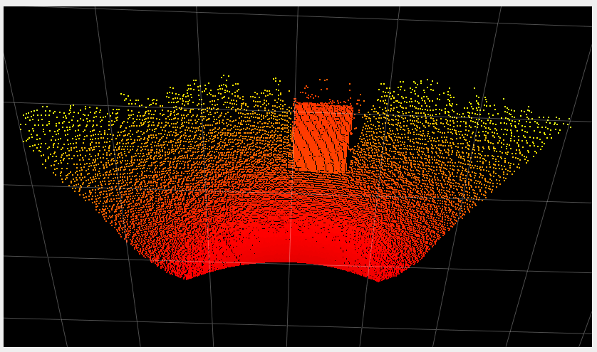

Maximum Distance Noise
Abstract
The O3R software estimates distance noise per pixel as well as the distance information per pixel. This distance noise parameter is an estimation of the standard deviation of the radial distance measurement, given in meters. It is based on a noise model built upon the acquired time of flight (ToF) measurements of a single frame. Pixels with a noise value above the threshold maxDistNoise are invalidated.
Description
The O3R camera and software use the ifm ToF technology to measure the distance of objects per pixel. The result are a distance image as and a distance noise image. The distance noise deduction can be interpreted as a standard deviation of the distance measurement in a metric scale. The noise level is dependent on the received signal’s amplitude (lower amplitude means greater noise) and on the ambient light level (high ambient light level, especially sunlight, can lead to high noise level).
The distance noise image is processed in the same algorithmic pipeline as the distance image. Any filter applied to the distance image is applied to the distance noise image as well. For example, if filters are activated in the spatial domain (see the bilateral filter), then they also filter the distance noise image such that the adapted noise image reflects the lowered noise due to lateral filtering.
The parameter maxDistNoise is used to invalidate pixels with high noise levels. Higher maxDistNoise values will allow noisier pixels to be valid pixels in the point cloud. The maximum allowed value is 1 meter, although we do not recommend using such a high value because the resulting distance measurement will be highly inaccurate in the noisy areas.
Low maxDistNoise values will result in more noisy pixels being marked as invalid. Values lower than 0.01 meters should always be validated against worst-case expected object and ambient light levels.
The minimum allowed maxDistNoise value is 0.00 meters. This will switch off the validation process based on the estimated distance noise image. The distance noise image is still computed and available to the user.
We suggest you start your experiments with the default values and assess the point cloud quality for your specific use case. The current default value is set to 0.02 meters, which allows for a robust point cloud with negligible noise. For applications where a rich point cloud (i.e., a cloud with more valid pixels) is preferred over accuracy, increasing the noise threshold can be a good idea.
Example
The following table shows measurements for the same scene with two different distance noise threshold values. The scene consists of a box positioned 1 meter away from the camera, outside in full sunlight. The amount of noise due to the ambient light is high, but it is apparent that we can still get distance values for many pixels by increasing the noise threshold.
Note: For demonstration purposes, we disabled the temporal filter in these images.
Noise threshold [m] |
Distance noise image |
Point cloud |
|
|---|---|---|---|
0.01 |
 |
|
 |
0.07 |
 |

Note: The distance noise image is the same for both noise threshold values. The difference is viewed in the point cloud, where the noise filtering discards more or fewer pixels.